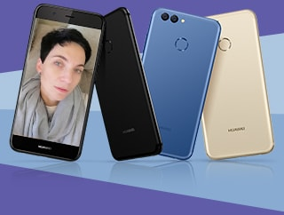
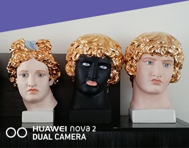
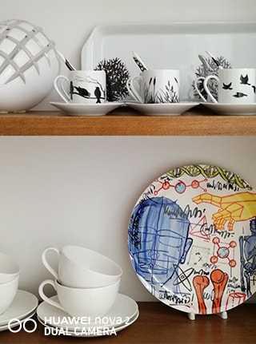
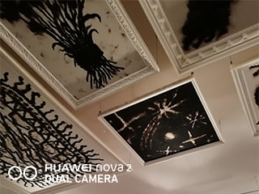
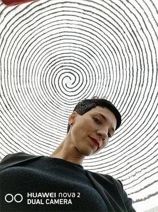
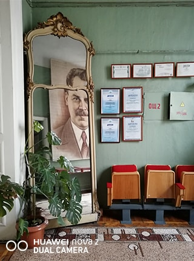
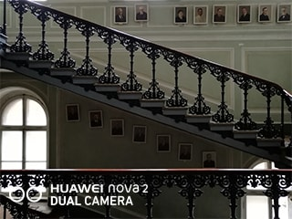
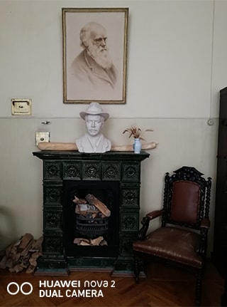
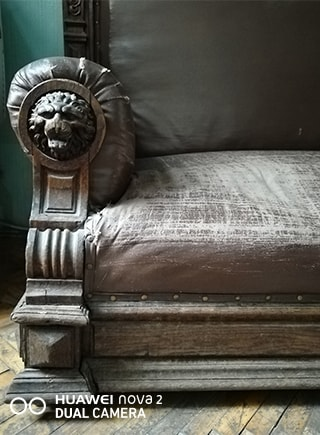
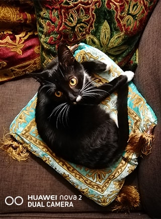

Катрин Борисов о фотографии себя и других

Показать свои работы директору Фонда RuArts и арт-директору галереи RuArts Катрин Борисов мечтают многие фотохудожники, но заслужить одобрение эксперта удается единицам. Мы выяснили, какие фотографии можно найти в ее личной коллекции и почему она считает, что за снимками на телефон – будущее.

— Катрин, какие тренды в выборе тем среди современных фотохудожников вы могли бы отметить?
Я не оперирую понятием модно, хотя и работаю в одной из ведущих галерей. Однако, можно заметить, что многие сегодня экспериментируют с абстракцией, цветом и “телесностью”, а также уделяют достойное внимание архитектурной съемке и натюрмортам.

— Как вы считаете, непрофессионал способен снять шедевральный кадр?
Я не помню, у кого из великих была такая цитата: “Даже у самого плохого поэта есть одно хорошее стихотворение”. Так и у фотографов: если снимать много, то рано или поздно один шедевр появится. Порой даже ребенок, ничего не знающий об искусстве фотографии, вдруг берет телефон и делает отличный кадр. Я одно время даже хотела собирать такие удачные детские работы.

— Какие фотографии обычно трогают лично вас?
Если мы говорим об эмоциональной нагрузке фотографии, то это всегда конкурс WORLD PRESS PHOTO. Журналисты знают, как задеть меня за живое. Я сама работала в газете “Известия”, и работа репортеров, умеющих в одном кадре рассказать историю, меня всегда завораживала. А если говорить о моей коллекции, то это совсем другое дело: я собираю эротику, суровый стиль и работы фотографов, которые занимаются темой нормы.

— Насколько качество работы фотографа зависит от аппаратуры?
Вопрос со звездочкой, как мы с друзьями шутим. Тут важно понимать, что для фотографа является качественным снимком. Если мы говорим о широкоформатной печати для выставки, то да, конечно, качество аппаратуры очень важно. Например, Адреас Горски всю свою работу построил на качестве изображений. А есть фотограф Томас Рафф, у которого есть много изображений “с пикселями”, но он ведь тоже работает с передовой техникой. Я помню первые снимки на цифровую камеру – это было смешно, мы не могли их печатать даже на разворот в журнале, они весили по 2МБ, и это казалось пределом. Теперь же и на смартфон можно делать отличные снимки , а затем распечатывать их.

— Как думаете, съемка на телефон может стать особенным жанром?
Мне кажется, что с развитием соцсетей и цифровых технологий в очередной раз поменяется и отношение к фотографии. И это радует! Этот вид искусства на данный момент самый востребованный, понятный и стремительно развивающийся. Я часто вижу удачные снимки на телефонах друзей, многие их них ведут классные странички на Flickr или Instagram. Вполне возможно, что в скором времени снимки на телефон станут выставлять серьезные галереи, как, например, полароиды Араки или Ворохла.

— Есть ли кадр, снятый вами, который вам особенно дорог?
Я сделала его еще в 1995 году. Тогда вышла новая пленка Kodak, и я решила, что с ней можно поэкспериментировать. Как-то снимала в кромешной тьме, а чувствительность пленки была всего 200ISO. Ко мне подошел на тот момент именитый фотограф и сказал, что ничего не получится. Я расстроилась, но с замиранием сердца ждала проявки. Это был мой лучший эксперимент: портреты людей, которых я снимала, казались пронизанными лучами света, а портрет художника Германа Виноградова я потом много раз выставляла.

— Расскажите о ваших ощущениях после тестирования смартфона Huawei nova2? Какими функциями при работе с камерой вы пользовались чаще всего?
Меня приятно удивило высокое качество передачи, файлы высоко разрешения, и очень смешная, но такая нужная «шкала настройки красоты»! Я не пользуюсь косметикой, и для меня эта функция оказалась просто спасением от синяков под глазами и неровностей кожи. На фото я всегда свежа и молода. Могу еще отметить работу с глубиной резкости: прекрасно подходит для пейзажей и натюрмортов.

— Какой вид съемки на Huawei nova2 стал вашим любимым?
Я честно влюбилась макросъемку. У меня получилось снять паутинку в каплях воды. Горжусь собой и камерой.
— Какой снимок, сделанный на Huawei nova 2, особенно вам понравился и почему?
Я сделала великолепный портрет своего кота при очень плохом освещении. Меня поразило качество съемки: резкость, цветопередача.

— Huawei nova 2 оснащен функциями автоматической обработки портретов в зависимости от индивидуальных параметров, например, от оттенка кожи и волос. Кажется ли вам эта возможность альтернативой ретуши?
Вот эта функция просто “бомба”! А главное, даже мне как профессионалу не очень понятно, как удалось сделать такие мягкие настройки. В работе я бы не стала на них обращать внимания, но для личного использования это то, что нужно! Я не большой поклонник селфи, однако с этой 20 МП камерой селфи хотелось делать часто.